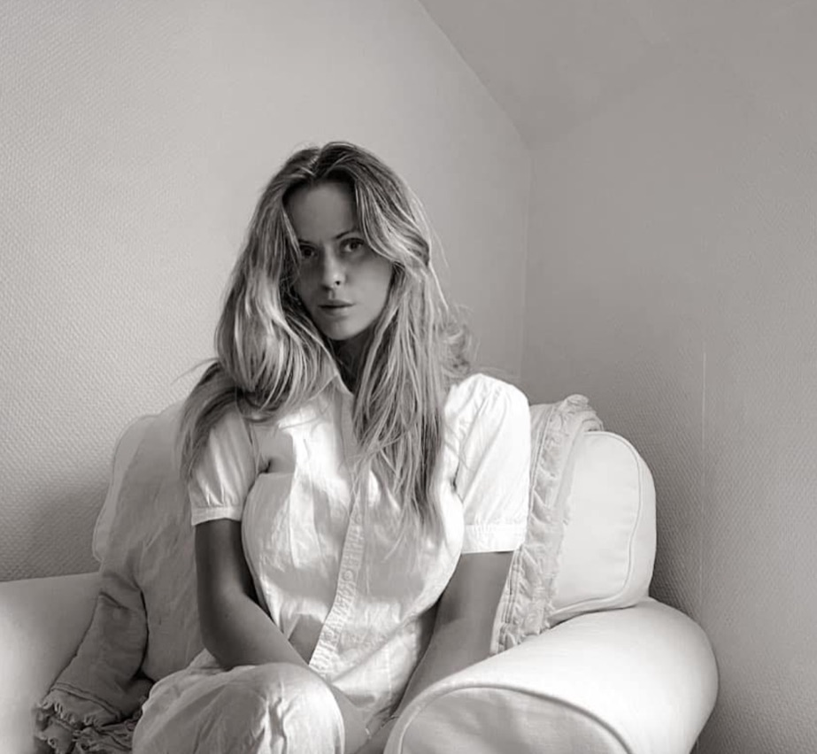

OM MIG
JEG HEDDER ROSA, ER 21 ÅR GAMMEL OG BOR I CHARLOTTENLUND
JEG HAR ALTID INTERESSERET MIG FOR DESIGN.
NÅR JEG ER FÆRDIG MED UDDANNELSEN SOM MULTIMEDIEDESIGNER, VIL JEG RIGTIG GERNE TAGE TOP-UPPEN I WEB DEVELOPMENT.
TIL SLUT ØNSKER JEG AT TAGE DEN 2-ÅRIGE KANDIDAT I DIGITALT DESIGN & INTERAKTIVE TEKNOLOGIER PÅ IT-UNIVERSITETET
JEG DRØMMER OM AT STARTE MIN EGEN VIRKSOMHED INDENFOR WEBDESIGN, LOGODESIGN ELLER ANDET GRAFISK ARBEJDE